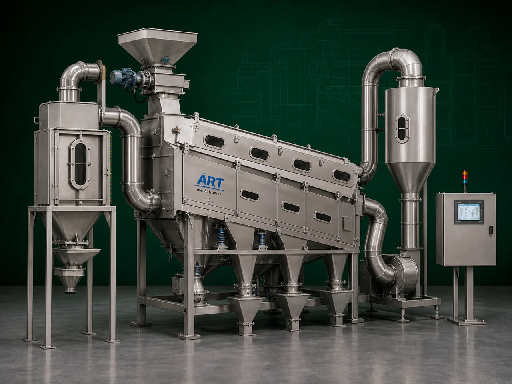

Air Screen Cleaner Machine (Industrial Grain, Seed & Agro Product Cleaning System)
An Air Screen Cleaner Machine, also known as an Industrial Air Screen Cleaner or Grain & Seed Cleaning Machine, is a highly efficient industrial equipment designed for cleaning, grading, and separating grains, seeds, pulses, spices, and agro products by removing dust, husk, straw, lightweight impurities, oversized particles, undersized particles, and foreign materials using a combination of airflow and screening technology.

About the Air Screen Cleaner
The machine combines:
- Air aspiration
- Vibratory screening
- Multi-stage mesh separation
- Density-based cleaning
to achieve high-quality product purification and classification.
Air screen cleaners are widely used in industries such as:
Grain processing plants
Seed processing industries
Rice mills
Flour mills
Pulses industries
Spice industries
Food processing plants
Agro product industries
where high cleaning efficiency, product purity, and continuous industrial processing are essential.
The machine is highly suitable for:
- Grain cleaning
- Seed cleaning
- Dust and husk removal
- Pre-cleaning applications
- Product grading
- Impurity separation
ART Mechatronics offers high-performance air screen cleaner machines, engineered for high-capacity operation, efficient impurity removal, energy-saving performance, and reliable industrial processing.
Working Principle of Air Screen Cleaner Machine
Grains, seeds, pulses, spices, or agro products are fed into machine through inlet hopper
Controlled airflow removes lightweight impurities such as:
- Dust
- Husk
- Straw
- Chaff
- Fine particles
Improves product cleanliness before screening process
Product passes over multiple vibrating screens Different mesh sizes separate: Oversized impurities Undersized particles Broken materials
Machine separates:
- Clean product
- Large impurities
- Fine waste particles
- Dust and lightweight impurities
Dust and lightweight waste collected through: Cyclone separator Dust collector Aspiration system
Cleaned and graded product discharged for further processing or storage
Types of Air Screen Cleaner Machines
- 1. Grain Air Screen Cleaner
Specially designed for:
- Wheat
- Rice
- Maize
- Grain cleaning applications
- 2. Seed Air Screen Cleaner
Used for: ✔ Seed cleaning and grading
- 3. Vibro Air Screen Cleaner
Combines:
- Vibratory screening
- Air aspiration technology for enhanced cleaning efficiency.
- 4. Multi Deck Air Screen Cleaner
Uses: ✔ Multiple screen layers for multi-stage grading and separation.
- 5. Pre Cleaning Air Screen System
Suitable for: ✔ Initial raw material cleaning before processing
- 6. Heavy Duty Industrial Air Screen Cleaner
Designed for: ✔ Large-scale industrial agro processing plants
Industries Using Air Screen Cleaner Machine
🌾 Grain Processing Industry Grain cleaning and grading 🌱 Seed Processing Industry Seed purification and classification 🍚 Rice Mill Industry Paddy and rice cleaning 🍃 Pulses Industry Dal cleaning and impurity removal 🌶️ Spice Industry Spice cleaning and grading 🍃 Food Processing Industry Raw ingredient cleaning systems 🐄 Feed Industry Feed raw material cleaning
Features & Advantages
- Efficient dust and impurity removal
- Multi-stage cleaning and grading system
- High-capacity continuous operation
- Improves product purity and quality
- Integrated air aspiration technology
- Heavy-duty industrial construction
- Low maintenance requirement
- Energy-efficient operation
- Suitable for multiple grains and seeds
Technical Highlights
Cleaning Technology: Air aspiration Vibratory screening Multi-stage separation Construction: Stainless Steel / Mild Steel Screen Arrangement: Single deck Double deck Multi deck Integrated Systems: Blower Cyclone separator Dust collector Capacity: Small to large industrial throughput Operation: Semi-automatic Fully automatic PLC-based systems
Turnkey Air Screen Cleaning Solutions
ART Mechatronics offers: Complete air screen cleaning systems Pre-cleaning and grading integration Dust collection and aspiration systems Pneumatic conveying integration Installation & commissioning After-sales service & AMC
Why Choose Art Mechatronics
Expertise in industrial grain and seed cleaning systems Customized solutions for multiple agro products High-performance and durable machine construction Energy-efficient and reliable industrial designs Proven industrial performance across sectors
Applications
Grain Processing Plants Seed Processing Units Rice Mills Pulse Processing Industries Spice Manufacturing Facilities Food Processing Plants
Related Cleaning, Sorting & Grading machines
Get pricing & specs for the Air Screen Cleaner
Share the product, target capacity, current process and plant location. These details help our engineers discuss the right machine or line configuration.
One partner, from design to start-up
ART Mechatronics designs, manufactures, installs and commissions your Air Screen Cleaner solution with regional presence in India, UAE and Thailand.